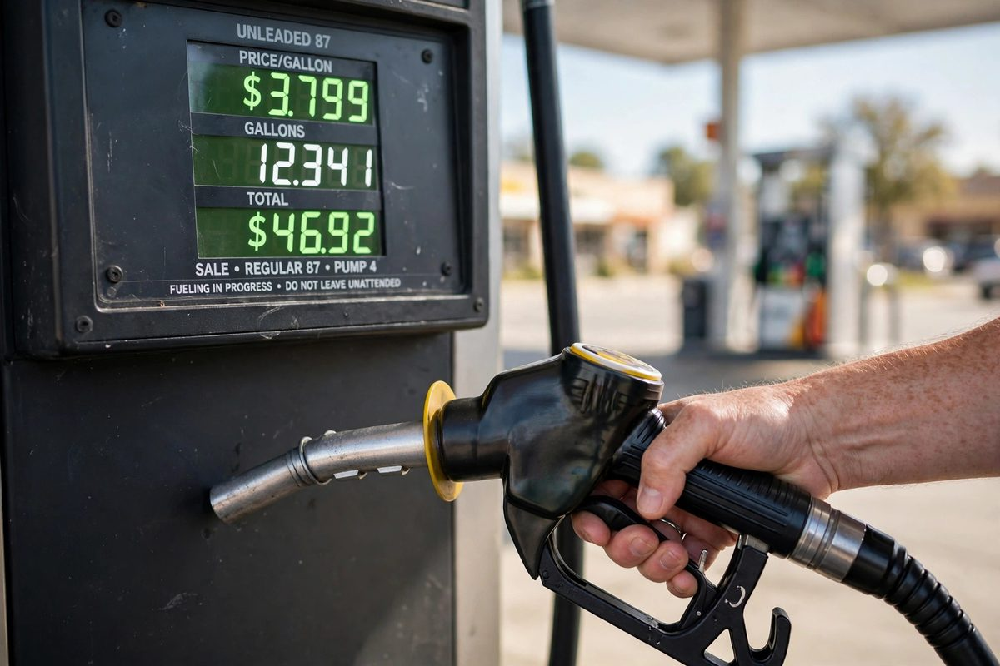
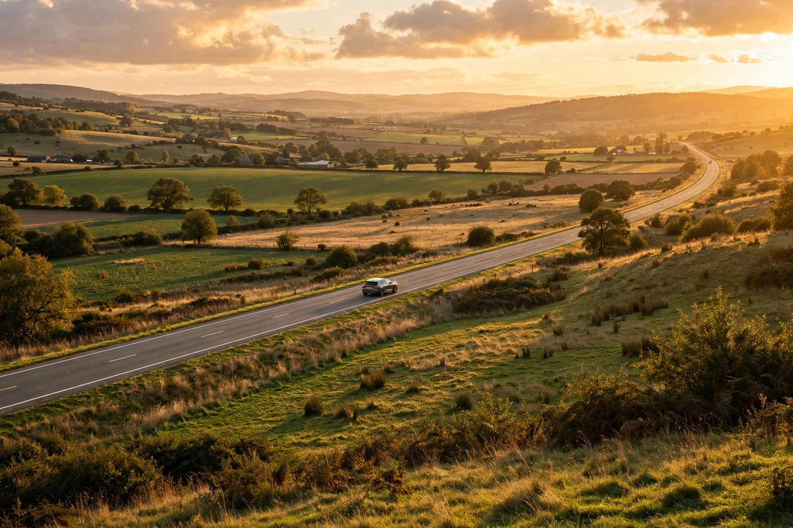

Home › Blog › How to Calculate Fuel Cost for a Trip
How to Calculate Fuel Cost for a Trip

Before a road trip, most drivers check the route and the weather. Far fewer check what the trip will cost in fuel — and then they are surprised at the pump. Working out fuel cost takes less than a minute, and you only need three numbers: how far you are going, how many miles your car does per gallon, and the price of fuel.
This guide shows you how to calculate fuel cost step by step, with the simple formula, a worked example, and a table of what a year of driving costs at different fuel economies. You will also learn what makes your fuel cost go up or down, and how to spend less on fuel.
What Is Fuel Cost?
Fuel cost is simply the money you spend on petrol or diesel to drive a certain distance. After depreciation, it is usually the largest amount a driver spends each year — and unlike a loan payment, it changes every month, because the fuel price moves and the distance you drive changes.
Fuel cost depends on three things. The first is distance: the further you drive, the more fuel you use. The second is your car's fuel economy, measured in miles per gallon (MPG): a car that does 40 MPG uses half as much fuel as a car that does 20 MPG over the same distance. The third is the price of fuel where you fill up.
That is why two drivers can pay very different amounts for the same trip. A small, efficient car on a motorway journey can cost half as much in fuel as a large SUV doing the same miles in town traffic.
The Fuel Cost Formula
The fuel cost formula has two short steps. First, work out how many gallons you need by dividing the distance by your car's MPG. Then multiply those gallons by the price of a gallon of fuel.
Gallons needed = distance in miles ÷ MPG
Fuel cost = gallons needed × price per gallon
Put together, the formula is:
Fuel cost = (distance ÷ MPG) × price per gallon
For example, a 300-mile trip in a car that gets 30 MPG needs 300 ÷ 30 = 10 gallons. At $3.50 a gallon, the trip costs 10 × $3.50 = $35.00. The same trip in a car that gets 20 MPG needs 15 gallons and costs $52.50.
If you drive in a country that measures fuel in litres, the same idea works with litres per 100 kilometres: divide the distance in kilometres by 100, multiply by your car's litres per 100 km, then multiply by the price per litre.
How to Calculate Fuel Cost in 3 Steps
You need only three numbers, and you can find all of them in a minute. Follow the steps below, then check the worked example to see the whole calculation in action.
Step 1 — Find the distance
Work out how far you are going. For a trip, check the distance in your maps app or sat-nav. For a month or a year, use your car's odometer: note the reading at the start and the end of the period, and subtract.
Remember to count the return journey. A 150-mile trip is 300 miles of driving if you come back the same way, and the fuel cost doubles with it.
Step 2 — Find your car's MPG
Your car's MPG is the number of miles it travels on one gallon of fuel. The most accurate figure is your real MPG, which you can measure yourself: fill the tank, reset the trip meter, drive normally, and at the next fill-up divide the miles driven by the gallons you add.
If you have not measured it yet, use your car's official MPG rating. In the United States, every new car's official ratings are published on fueleconomy.gov, the US Department of Energy's fuel economy site. Use the combined figure for a mix of town and motorway driving, and the highway figure for a long motorway trip.

Step 3 — Find the fuel price and multiply
Note the price of a gallon of fuel at the station where you usually fill up. Fuel prices change often and vary by area, so use the current price rather than one you remember from last month.
Now put the three numbers into the formula. Divide the distance by your MPG to get the gallons, then multiply by the price per gallon.
Worked example: a 500-mile road trip, a car that gets 28 MPG, and fuel at $3.60 a gallon. Gallons needed: 500 ÷ 28 = 17.86 gallons. Fuel cost: 17.86 × $3.60 = $64.29. The round trip of 1,000 miles would cost $128.58.
Want to skip the maths? Try our free fuel cost calculator — enter the distance, your MPG and the fuel price, and it works out the cost for you, including the cost per mile.
Fuel Cost for a Road Trip
A road trip is the most common reason to calculate fuel cost, because it is the one time the bill arrives all at once. A 1,000-mile round trip can cost anywhere from $90 to $180 or more in fuel, depending on the car and the fuel price.
Start with the total distance, including any side trips and driving at your destination. A weekend away that looks like 400 miles on the map can easily become 500 miles once you add the drive to a beach or a restaurant. Add about 10% to the map distance to be safe.
Then use your highway MPG rather than your combined figure, because most of a road trip is steady motorway driving, where cars are at their most efficient. And use the fuel price for the area you are driving through — fuel is often cheaper in some states and dearer in others.
Here is a quick example. A 600-mile round trip in a car that gets 32 MPG on the highway, with fuel at $3.50 a gallon, needs 600 ÷ 32 = 18.75 gallons and costs 18.75 × $3.50 = $65.63. The same trip in a car that gets 22 MPG needs 27.27 gallons and costs $95.45.

What Does a Year of Driving Cost in Fuel?
For a yearly budget, the same formula works with your yearly mileage instead of a trip distance. The average American drives roughly 13,500 miles a year, so here is what that costs at different fuel economies, with fuel at $3.50 a gallon:
| Your car's MPG | Gallons per year | Fuel cost per year | Fuel cost per month |
|---|---|---|---|
| 20 MPG | 675 | $2,362.50 | $196.88 |
| 25 MPG | 540 | $1,890.00 | $157.50 |
| 30 MPG | 450 | $1,575.00 | $131.25 |
| 35 MPG | 386 | $1,350.00 | $112.50 |
| 40 MPG | 338 | $1,181.25 | $98.44 |
The gap is bigger than most people expect. Moving from a car that gets 20 MPG to one that gets 35 MPG saves $1,012.50 a year at $3.50 a gallon — over five years, that is more than $5,000.
Small improvements help too. Going from 25 to 30 MPG saves $315 a year, about $26 a month — enough to notice, and it comes from driving habits alone, without buying a new car.
What Affects Your Fuel Cost?
Three numbers go into the formula, but several things move those numbers around in real life. Understanding them helps you predict your cost more accurately — and find the savings.
Your car's fuel economy
MPG is the biggest factor. A large SUV or pickup truck often gets 15 to 20 MPG, a mid-size sedan gets 25 to 35 MPG, and a hybrid can reach 40 to 50 MPG or more. The difference between 20 and 40 MPG is a fuel bill cut in half.
The fuel price
Fuel prices move with the price of crude oil, the season, and local taxes, so the same tank of fuel can cost several dollars more or less from one month to the next. Prices also vary by place: fuel is usually cheaper at large stations away from motorways and in states with lower fuel taxes.
How and where you drive
Short trips, stop-and-go traffic and cold starts use more fuel per mile than steady motorway driving, because the engine spends more time warming up and idling. Air conditioning, a roof box, heavy loads and under-inflated tires all add to fuel use too.
The season
Winter driving usually costs more in fuel. Cold engines take longer to warm up, winter fuel blends give slightly less energy per gallon, and heaters and defrosters all draw power.
How to Spend Less on Fuel
You cannot change the fuel price, but you can change how much fuel you use. These habits are simple, cost nothing, and together they can cut your fuel bill by 10% or more.
- Drive smoothly. Gentle acceleration, steady speed and looking ahead to avoid braking save more fuel than any gadget.
- Keep your tires at the right pressure. Under-inflated tires make the engine work harder. Check the pressure once a month.
- Slow down on the motorway. Fuel use rises quickly above 55 to 60 mph. Dropping from 75 mph to 65 mph on a long trip can save a noticeable amount of fuel.
- Remove weight and drag. Take the roof box off when you are not using it, and clear heavy items out of the boot.
- Combine short trips. A warm engine is far more efficient than a cold one, so doing several errands in one trip uses less fuel than the same errands spread over several cold starts.
- Compare fuel prices. Use a fuel price app to find the cheapest station on your route, and avoid filling up at motorway service stations unless you have to.
Fuel Cost vs. Fuel Consumption
Fuel cost and fuel consumption are related, but they are not the same thing. Fuel consumption is how much fuel your car uses, measured in MPG. Fuel cost is what that fuel costs you in money, which depends on the price of fuel as well as how much you use. If the fuel price rises by 20%, your fuel cost rises by 20% even though your car uses exactly the same amount of fuel.
Frequently asked questions
How do I calculate fuel cost for a trip?
Divide the trip distance in miles by your car's MPG to get the gallons you need, then multiply by the price of a gallon. For example, a 300-mile trip in a car that gets 30 MPG uses 10 gallons; at $3.50 a gallon, the trip costs $35.
How much does it cost in fuel to drive 100 miles?
It depends on your car's MPG and the fuel price. At 30 MPG and $3.50 a gallon, 100 miles uses about 3.3 gallons and costs about $11.67. At 20 MPG the same 100 miles costs $17.50, and at 40 MPG it costs $8.75.
What is a good MPG for saving fuel?
The higher the MPG, the less fuel you use. Most modern petrol cars get between 25 and 35 MPG, and a car above 35 MPG is good on fuel. Hybrids often reach 40 to 50 MPG or more.
Why does my fuel cost change from month to month?
Fuel cost changes because the fuel price moves up and down, and because you drive different distances each month. Cold weather, short trips, heavy traffic and air conditioning also lower your MPG.
How can I calculate fuel cost without knowing my MPG?
Fill the tank, reset the trip meter, and drive normally. At the next fill-up, divide the miles driven by the gallons you add. That is your real MPG. Or look up your car's official MPG rating on fueleconomy.gov.